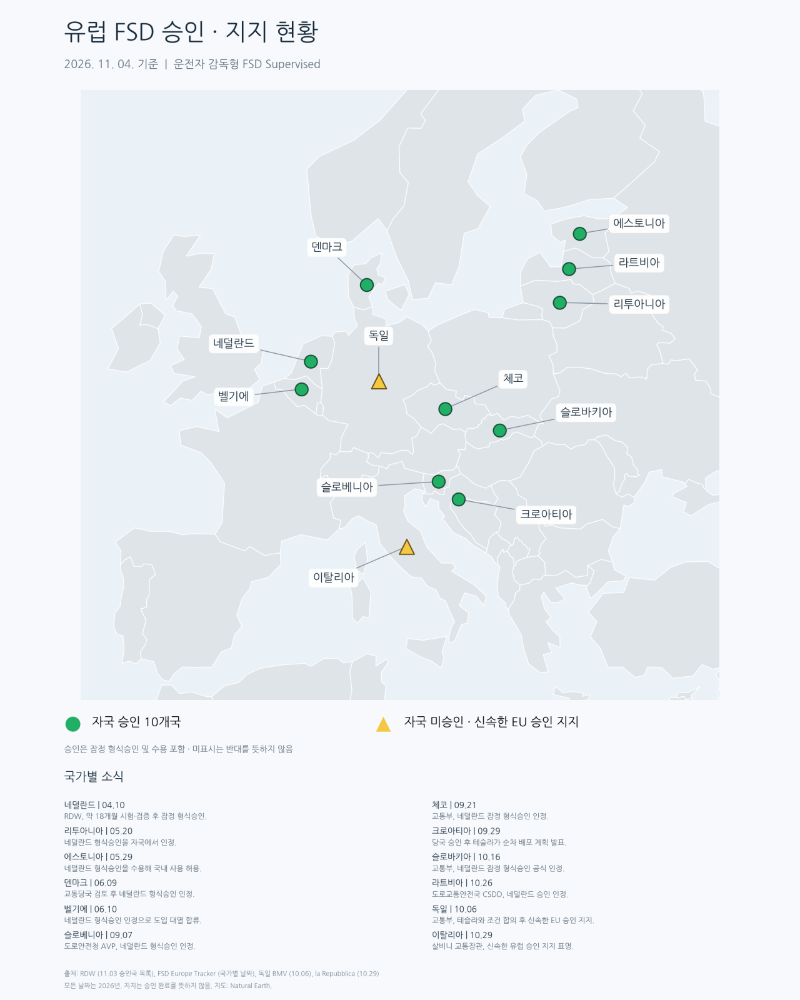

10개국에서 승인되고 있고,
자동차 생산국인 독일/이탈리아에서도 EU 승인을 지지한다는 입장을 밝힘.

10개국에서 승인되고 있고,
자동차 생산국인 독일/이탈리아에서도 EU 승인을 지지한다는 입장을 밝힘.
회전교차로 10개 만나는 곳도 잘하던데 오히려 그런곳은 큰 문제없음 뭔가 횡한곳이문제임 ㅋㅋ
외곽에 가로등도 없고, 차선도 잘 안보이는 그런 곳이 더 문젠가?
ㅇㅇ 애매한 곳이 더 어려워하는듯
오히려 그렇개 이동하는 물체가 확실하면 잘하더라 데이터도 많고
캐나다 외곽에서 운전할 때, 가로등 없어서 존나 어두운데, 차선도 많이 지워져서 힘들었던 기억이 떠올랐음.
차도 뜨문 뜨문 있는데, 반대편에서 간간히 차오면 눈 뽕이 지렸단 말이지.
뭐 인식이 되야 차선을 잡고 갈텐데 그런게 없으면 좀 어려울 수 있겠네.
??: fsd되는 나라 몇 개 있음??
근데 진짜 몇개 없다는거..
동남아 삶?
얼른 해줘...
되는나라가 별로 없네
회색은 아에 불허고
세모가 부분적 으로 인거자나
찾아보니까 EU 가입국이 27개고 그 중에 10개국이 승인됨.
올해 네덜란드 열리고, 네덜란드 승인을 근거로 FSD 승인한 국가가 많음. 거기다가 EU 승인 지지하는 나라들도 있어서 승인될 나라들 좀 더 많아질 걸로 보임
우리나라는 급할께 없지 (제조사 정부 ) 입장에서는 다 변하는거 보고 천천히 대응할듯 해
나도 그래서 아직 차량 구매를 미루고 있고 자동차 산업이 부가가치 자체는 반도체 보다 낮지만
고용효과 산업전반에 미치는 영향은 반도체를 압도 하니까
우리야 소비자지만 정부 나 회사 입장에서는 막고 싶을수 밖에 없겠지
파리 내에서도 가능하려나 ㅋㅋㅋ
체코도 자동차 생산국임... 자국 브랜드 스코다도 있는데
그러게. 미안하다
부산 골목길에서도 FSD 잘 되니까 뭐 성능은 확실하지.
현토부에서 절대적으로 "검증안되고 위험하며 책임소재를 구분하기 어려워서" 막을뿐.
저렇게 되도 우리나라 승인은 27년 이후가 될듯
내 테슬라도 얼른 FSD 되면 좋겠다 진짜...
내가 fsd lite탄다 lite는 hw3.0이라 멍청한 모습이 있지만
일반적인 골목 일반적인 도로환경은 거의되더라(거의라는게 타다보면 이건 fsd lite가 실수하겠다 그런느낌이있음) 그냥 fsd도 타보면 거의 모든환경되는수준이라 유럽도 다 될듯
궁극적으로 지도데이터 때문이 아닐까
우리도 슬슬 하겠지 안할리는 없다고 봄
근데 꼭 남들 하는데 우린 왜 안하냐고 징징임
그새끼들이 자폭하명 우리도 자폭할건가
왜 쟤는 하는데 왜 우린 이지랄인지
자국사업이 있으면 막는게 당연한거긴해
있는 나라인 독일 이탈리아도 추진중이고 체코는 허가함
일본처럼 테스트 중인 것도 아니고 너무 아무것도 못 하고 있긴 하다...
어차피 FSD 허가해도 결국엔 수요자는 갈리기 때문에 현기차 타격 생각보다 크지 않을텐데 그놈의 자국산업보호 명분 시발
미국 유럽 중국 일본 죄다 규제 풀리고 있는 와중에 우리나라는 국감나가닌깐 특례 신청 하라는 개병신 같은 소리 내뱉고선 특례 신청하닌깐 그걸 검토할 능력조차 없음 ㅋㅋ
그..eu 27개 국가중 10개가 죄다라고 하기엔 틀린말 같음.
점마들 과거에 신재생에너지 밀다가 보조금부터 에너지 시설 점유율 까지 중국한테 쪽 빨리고 지금은 꽤나 자국위주로 다시 굴러가는중임.
프랑스만 봐도 지금 데이터세 만들겠다고 나서는중이라 ㅋㅋ
독일, 이탈리아는 지지한다고 하지만 EU등쌀에 밀려서 하는 말일 가능성도 있지않나 독일은 안그래도 자동차산업 하락 중인데 진짜 열어주려나
다 자국에 자동차 산업이 없는 국가들
글 제대로 읽은 거 맞지?
독일, 이탈리아 : ??
체코도 있고
독일 이탈리아는 있는데도 추진중임
독일은 진짜 좆됐나 이제..
유럽이야 뭐 fsd 에 데이터세라도 붙여서 알아스 잘 하겠지...
현대야 fsd사다써라 이제와서 새로 개발하기에는 너무 늦었다 ㅋㅋ
우리는 흉기차 지킨다고 마냥 막다가 미국에 얼마나 쳐맞을지 맞을지 상상이 안되네 ㅋㅋ
근데 유럽 도심 도로는 헬인데....... 가능할까?